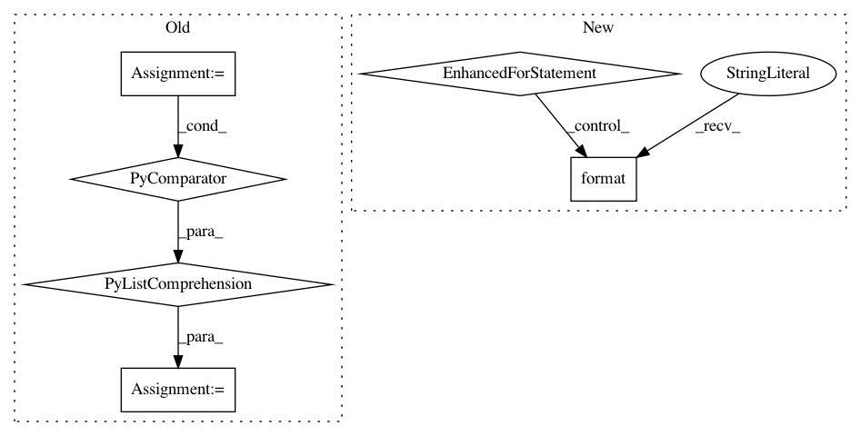

697c5b9d1b83ea199c7590e1d0ef695cfb99aba5,se3cnn/point/kernel.py,Kernel,__init__,#Kernel#,10
Before Change
set_of_l_filters = set_of_l_filters.union(l_filters)
// precompute the change of basis Q
Q = [SO3.clebsch_gordan(l_out, l_in, l) for l in l_filters]
Q = torch.cat(Q, dim=2) // [m_out, m_in, l_filter * m_filter]
self.register_buffer("Q_{}_{}".format(i, j), Q.type(torch.get_default_dtype()))
// create the radial model: R+ -> R^n_path
After Change
// create the set of all spherical harmonics orders needed
set_of_l_filters = set_of_l_filters.union(l_filters)
for l in l_filters:
// precompute the change of basis Q
Q = SO3.clebsch_gordan(l_out, l_in, l).type(torch.get_default_dtype())
self.register_buffer("Q_{}_{}_{}".format(l_out, l_in, l), Q)
// create the radial model: R+ -> R^n_path
// it contains the learned parameters
self.R = RadialModel(n_path)
self.set_of_l_filters = sorted(set_of_l_filters)
In pattern: SUPERPATTERN
Frequency: 3
Non-data size: 6
Instances
Project Name: mariogeiger/se3cnn
Commit Name: 697c5b9d1b83ea199c7590e1d0ef695cfb99aba5
Time: 2019-07-23
Author: geiger.mario@gmail.com
File Name: se3cnn/point/kernel.py
Class Name: Kernel
Method Name: __init__
Project Name: nilmtk/nilmtk
Commit Name: 44672d4eba334ca97d32874d9aa03b02ce46d513
Time: 2014-12-10
Author: jack-list@xlk.org.uk
File Name: nilmtk/metergroup.py
Class Name: MeterGroup
Method Name: load
Project Name: scikit-learn-contrib/imbalanced-learn
Commit Name: 153f6e0ff5729fc22b68d5f6e0fd05edf96d8c2c
Time: 2019-11-17
Author: g.lemaitre58@gmail.com
File Name: examples/datasets/plot_make_imbalance.py
Class Name:
Method Name: